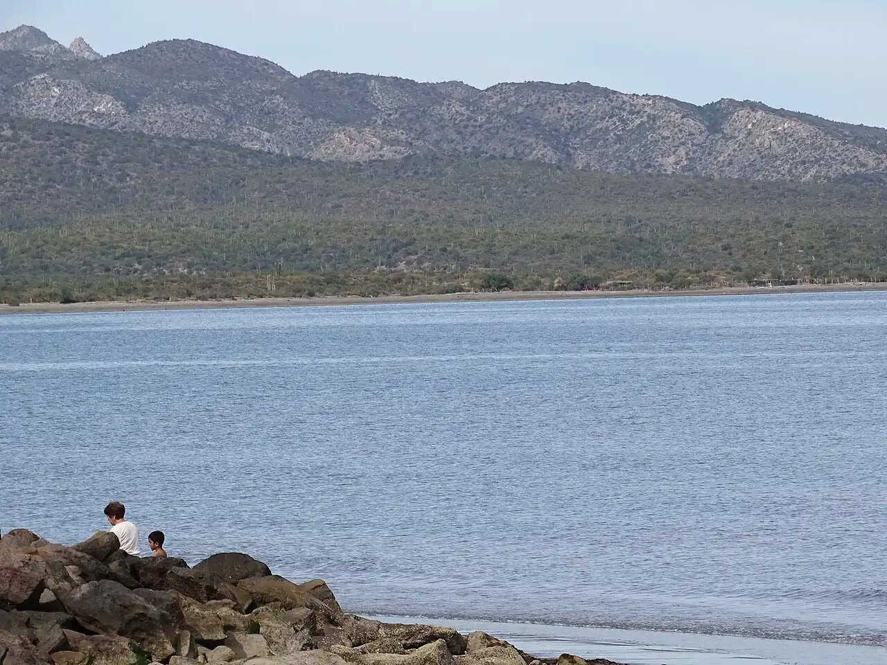

Loreto — Parc national Bahía de Loreto
Loreto, Mexique · kayak, snorkeling

Petite ville historique de Basse-Californie tournée vers les îles du parc national marin de la baie de Loreto. En kayak ou en bateau, on rejoint des criques où l’on croise otaries, pélicans et parfois dauphins.
- Lieu
- Loreto, Mexique
- Niveau
- Intermédiaire
- Activités
- kayak, snorkeling
- Type d'eau
- Mer / océan
- Coordonnées
- 26.01, -111.34 (position approximative du secteur)
Dangers à connaître
- Le vent du nord peut lever une mer courte en hiver : prudence en kayak loin de la côte.
- Soleil très intense et peu d’ombre sur les îles.
Le conseil d'Ocean Buddy
Pars tôt le matin, avant que le vent ne se lève, et renseigne-toi sur le droit d’accès au parc national marin.
Ouvrir dans Ocean Buddy Télécharger sur l'App Store
Source : Fiche Ocean Buddy · septembre 2026 · à vérifier localement.